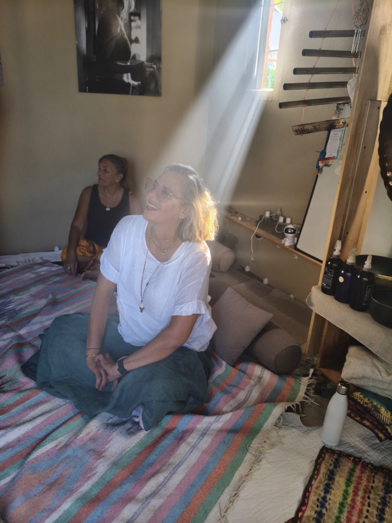

Actividades Grupales y/o Especiales
- ✓ Masaje a niños/as en presencia de un adulto responsable
- ✓ Taller "El arte del contacto de a dos": padres e hij@s, amig@s, parejas
- ✓ Ceremonias de Cacao
- ✓ Talleres grupales de Respiración & Automasaje
- ✓ Kidance - Baile libre en sesiones con Dj Bubu
- ✓ Workshops NIVEL 1 Y NIVEL 2 para aprender la experiencia de contacto en forma presencial. Con o sin experiencia previa! 100% garantizado contenido premium.
- *Si sos terapeuta corporal ideal para potenciar tu servicio!
- *Si no tenés experiencia, ideal para aprender una forma diferente y distinguida de contacto!
- *Y si lo querés como experiencia personal, es un viaje!
- ✓ Zoom en grupo o 1:1 para escucha, respiración, automasaje y baño de sonido